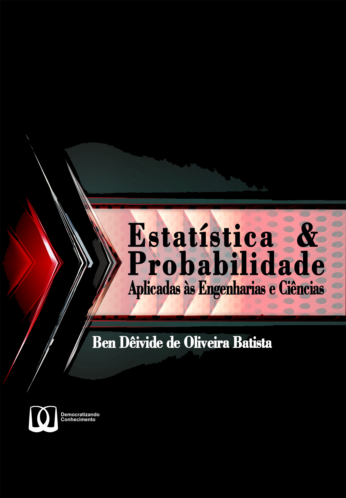

Estatística e Probabilidade
Aula 11 - Probabilidades
Filosofia de publicação (Selo DC)

Livro de Apoio
Usaremos Batista (2023):

Teoria de conjuntos no contexto probabilístico
Definição (Experimento Aleatório): Todo experimento cujo resultado não pode ser previsto antes de sua execução, é chamado de experimento aleatório.
Exemplos
- Lançar um dado equilibrado e observar o resultado obtido na face superior do dado;
- Observar o número de chamadas telefônicas que chegam a uma central telefônica em um determinado intervalo de tempo;
- Para a escolha ao acaso de uma lâmpada que acabou de sair do processo de fabricação, verificar o tempo de duração da lâmpada em funcionamento.
Exemplos
Em um contexto aplicado, podemos estar interessados em estudar a resistência de um fio de cobre a uma determinada corrente
Espaço amostral
Definição (Espaço amostral): O conjunto de todos os resultados possíveis de um experimento, denotado por \(\Omega\), é chamado de espaço amostral.
- Cada um dos elementos do espaço amostral é representado por \(\omega\);
- Relações:
- Pertinência: \(\omega \in \Omega\);
- Continência: \(A \subset B \Leftrightarrow \omega \in A \Rightarrow \omega \in B\);
- Equivalência: \(A = B \Leftrightarrow A \subset B \textrm{ e } B \subset A\).
Espaços amostrais discretos e contínuos
Definição (Espaços amostrais discretos e contínuos): Um espaço amostral é discreto se o conjunto dos possíveis resultados são finito ou infinito contável (ou enumerável). Um espaço amostral é dito contínuo se o conjunto dos possíveis resultados são infinitos não contável (ou não enumerável)
Exemplo
Considere um experimento em que você seleciona uma câmera de telefone celular e registra o tempo de recarga de um flash. Os resultados possíveis para o tempo dependem da resolução do temporizador e dos tempos máximo e mínimo de recarga. Entretanto, podemos definir inicialmente o espaço amostral em termos da reta real positiva (\(\mathbb{R}_+\)), isto é,
\[\begin{align*} \Omega = \mathbb{R}_+ & = \{ x ~:~ x > 0\}. \end{align*}\]
Se soubermos que os tempos de recarga estão entre \(1,5\) e \(5\) segundos, podemos definir o espaço amostral da seguinte forma:
\[\begin{align*} \Omega & = \{ x ~:~ 1,5 \leq x \leq 5\}. \end{align*}\]
Caso, consideremos o tempo de recarga como “baixo”, “médio” ou “alto”, reescrevemos o espaço amostral como:
\[\begin{align*} \Omega & = \{ \textrm{baixo}, \textrm{médio}, \textrm{alto} \}. \end{align*}\]
Exemplo (continuação…)
Por fim, podemos considerar apenas o fato da câmera satisfazer ou não as especificações do tempo de recarga mínimo, e assim, podemos assumir como resultados para esse espaço amostral: “sim” ou não”, isto é,
\[\begin{align*} \Omega & = \{\textrm{sim},~\textrm{não}\}. \end{align*}\]
Para as duas primeiras situações, temos exemplos de espaços amostrais contínuos, e nos dois últimos, exemplos de espaços amostrais discretos.
Subconjunto
Definição (Subconjunto): Se todo elemento do conjunto \(A\) é também elemento do conjunto \(B\), então \(A\) é definido como um subconjunto de \(B\), sendo representado \(A\subset B\) ou \(B\supset A\) (\(A\) está contido em \(B\) ou \(B\) contém \(A\)), em notação dizemos que: \[\begin{align*} A \subset B \Leftrightarrow A \subseteq B \textrm{ e } A \neq B. \end{align*}\]
- Essa definição pode ser aplicada também a subconjuntos de \(\Omega\), como apresentado no Exemplo sobre subconjuntos, a seguir.
Exemplo
Sejam os subconjuntos de \(\Omega\) do experimento aleatório apresentado no Exemplo sobre espaços amostrais, dos quais temos: \[\begin{align*} B=\{ 1,2,3,4 \} \ \mbox{ e } \ A= \{ 1,2,3 \}, \end{align*}\] então \(A\) é um subconjunto de \(B\), pois, os elementos que contém em \(A\), também contém em \(B\).
Evento
Definição (Evento): Todo subconjunto do espaço amostral (\(\Omega\)), representado por letras latinas em maiúsculo, \(A\), \(B\), \(\ldots\), é chamado de evento.
Exemplo
Um experimento lança três moedas honestas, e deseja-se verificar a face superior dessas moedas. Sabe-se que cada moeda apresenta duas faces: cara (H) e coroa (T). Dessa forma, o espaço amostral é dado por: \[\begin{align*} \Omega = &\{(H,H,H),(H,H,T),(H,T,H),(H,T,T),\\ & (T,H,H),(T,H,T),(T,T,H),(T,T,T)\}. \end{align*}\]Um evento retirado desse espaço amostral seria \(A=\{(H,H,H)\), \((H,H,T)\), \((H,T,T) \}\), ou seja, o evento em que dos três arremessos de moedas, tenha saído “cara” na primeira moeda.
Evento certo, impossível e elementar
Definição (Evento certo, impossível e elementar): Seja \(\Omega\) o espaço amostral do experimento. Então dizemos que \(\Omega\) é o evento certo, e \(\emptyset\) é o evento impossível, e o evento \(\{\omega\}\) é dito elementar.
Definição (Conjunto vazio): Se o conjunto A não contém nenhum elemento, então A é chamado de conjunto nulo ou conjunto vazio, ou seja, \(A=\varnothing\) ou \(A=\{ \ \}\), isto é, \[\begin{align*} A & = \{\omega \in \Omega: \omega \neq \omega \}. \end{align*}\]
União de dois eventos
Definição (União de dois eventos): Sejam \(A\) e \(B\), dois eventos quaisquer de \(\Omega\), então o conjunto de todos os elementos que estão em \(A\) ou \(B\) ou em ambos, é definido como o conjunto união de \(A\) e \(B\), denotado por \(A\cup B\), tal que, \[\begin{align*} A\cup B & = \{\omega \in \Omega: ~\omega \in A \textrm{ ou } \omega \in B\}. \end{align*}\]
Exemplo
Sejam os conjuntos:
\[\begin{align*} A & =\{1,2,3\} \ \mbox{e} \ B=\{3,4,5,6\}, \end{align*}\]então
\[\begin{align*} A\cup B & =\{1,2,3,4,5,6\}. \end{align*}\]
Interseção de dois eventos
Definição (Interseção de dois eventos): Sejam \(A\) e \(B\), dois eventos quaisquer de \(\Omega\), então o conjunto que contém todos os elementos que estão em \(A\) e \(B\), é definido como a interseção de \(A\) e \(B\), denotado por \(A\cap B\) ou \(AB\), tal que, \[\begin{align*} A \cap B & = \{\omega \in \Omega: ~\omega \in A \textrm{ e } \omega \in B\}. \end{align*}\]
- Do Exemplo sobre união de eventos, temos que a intersecção de \(AB = \{3\}\).
Eventos Disjuntos ou multuamente exclusivos
Definição (Eventos Disjuntos ou multuamente exclusivos): Sejam \(A\) e \(B\), dois eventos quaisquer de \(\Omega\), então estes são disjuntos ou mutuamente exclusivos quando não existir elementos em comum entre \(A\) e \(B\), isto é, \(A\cap B = \emptyset\).
- Exemplo: Sejam os eventos \(A=\{1,2,3,4\}\) e \(B=\{5,6\}\), então \(A\cap B=\varnothing\).
Eventos equivalentes
Definição (Eventos equivalentes): Dois eventos \(A\) e \(B\) são definidos equivalentes, ou iguais, se \(A\subseteq B\) e \(B \subseteq A\).
- Exemplo: Sejam os eventos \(A=\{1,2,3,4\}\) e \(B=\{5,6\}\), então \(A\cap B=\varnothing\).
Evento complementar
Definição (Evento complementar): Seja \(A\) um evento de \(\Omega\). Então o complemento do evento \(A\) com respeito a \(\Omega\), denotado por \(\overline{A}\), \(A^c\), ou \(\Omega-A\), é o subconjunto dos elementos de \(\Omega\) exceto os elementos do evento \(A\), isto é, \[\begin{align*}\label{compeventos} A^c & = \{\omega \in \Omega: ~ \omega \notin A\}. \end{align*}\]
Exemplo
Seja o espaço amostral \(\Omega\) do experimento que consiste em arremessar três moedas honestas. Diremos que \(H\) consiste na face superior da moeda ser cara, e \(T\) coroa. Assim,
\[\begin{align*} \Omega = &\{(H,H,H),(H,H,T),(H,T,H),(H,T,T),\\ & (T,H,H),(T,H,T),(T,T,H),(T,T,T)\}. \end{align*}\]e um subconjunto de \(\Omega\), cujo evento será aparecer cara na primeira moeda, dado por
\[A=\{(H,H,H),(H,H,T),(H,T,H), (H,T,T)\}.\]Então o complemento de A será:
\[\overline{A}=\{(T,H,H),(T,H,T), (T,T,H), (T,T,T)\}.\]
Diferença de dois eventos
Definição (Diferença de dois eventos): Sejam A e B dois eventos de \(\Omega\). O conjunto de todos os elementos de \(A\) que não estão em \(B\), serão denotados por \(A-B\) ou \(A\setminus B\), sendo definido por conjunto diferença, isto é, \[\begin{align*} A - B & = \{\omega \in \Omega: ~\omega \in A \textrm{ e } \omega \notin B\}. \end{align*}\]
- Exemplo: Sejam os conjuntos \(A=\{1,2,3,4\}\) e \(B =\{3,4\}\), então \(A-B=\{1,2\}\).
Partição
Definição (Partição): Considerando uma sequência de eventos \(A_1\), \(A_2\), \(\ldots\), \(A_n\), não vazios, é uma partição do evento \(A\), se e somente se,
- \(A = \bigcup_{i = 1}^{n}A_i\);
- \(A_1\), \(A_2\), \(\ldots\), \(A_n\) são multuamente disjuntos, tais que \(A_i \cap A_j, ~\forall i \neq j\).
Leis na teoria de conjuntos
Definição (Leis na teoria de conjuntos): Considere três eventos \(A\), \(B\), e \(C\) definidos em \(\Omega\), então segue que:
- Lei comutativa: \(A\cup B = B \cup A\) e \(A\cap B = B \cap A\);
- Lei associativa: \(A \cup (B\cup C)=(A\cup B)\cup C\);
- Lei distributiva: \(A \cup (B \cap C)=(A\cup B)\cap (A\cup C)\) e \(A \cap (B \cup C)=(A\cap B)\cup (A\cap C)\);
- Lei DeMorgan: \((A \cup B)^c = A^c \cap B^c\) e \(( A \cap B)^c = A^c \cup B^c\).
Ver livro EPAEC!.
Identidades em conjuntos
Definição (Identidade em conjuntos): Sejam os eventos \(A\) e \(B\) definidos no espaço amostral \(\Omega\), não vazio. Então, apresentamos as seguintes identidades:
- \(A\cap A^c = \emptyset\);
- \(A \cup A^c = \Omega\);
- \(\Omega^c = \emptyset\);
- \(\emptyset^c = \Omega\);
- \((A^C)^C=\overline{(\overline{A})}=A\), em outras palavras, o complemento de \(\overline{A}\) é igual a \(A\);
- \(A\Omega=A\) (Elemento neutro);
Identidades em conjuntos
(continuação…)
- \(A\cup \Omega=\Omega\);
- \(A \cap A = A\) (Idempotência);
- \(A\varnothing=\varnothing\) (Elemento absorvente);
- \(A\cup \varnothing = A\);
- \(A - B = A - (A \cap B) = A \cap B^c\);
- \(B = (B \cap A) \cup (B \cap A^c)\);
- \(B - A = B \cap A^c\);
- \(A \cup B = A \cup (B \cap A^c)\);
- \(A \cup B = (A^c \cap B)\cup (A \cap B) \cup (A \cap B^c)\).
Questões?
Próximas aulas

Referências